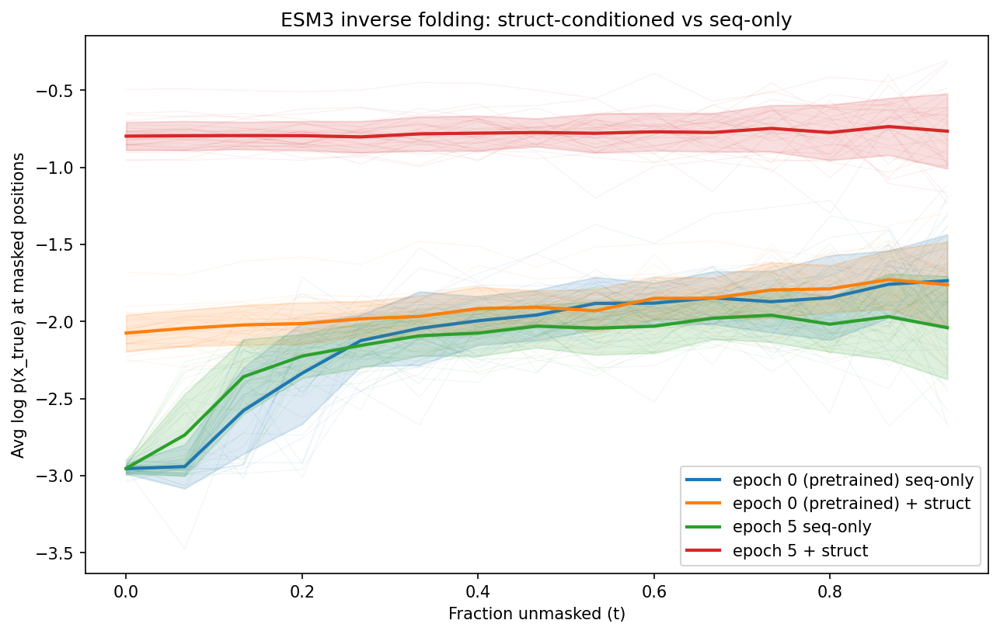

Evaluating Models with Likelihood Curves¶
Likelihood curves measure how well a model predicts masked amino acids as more of the sequence is revealed. They provide a principled evaluation of model quality that works for both sequence-only and structure-conditioned models.
How it works¶
At each noise level t ∈ [0, 1):
- Mask each non-special position with probability
(1 - t) - Run the model forward on the masked sequence
- Measure the average log probability assigned to the true token at masked positions
At t ≈ 0: nearly everything is masked — the model must predict from minimal context (or from structure alone in the conditioned case).
At t ≈ 1: nearly everything is revealed — the model has rich context.
A better model produces higher log probabilities at every noise level.
Basic usage¶
from protstar.eval.likelihood_curves import (
compute_log_prob_trajectory,
plot_log_prob_trajectories,
)
from protstar.models.esm import ESMC
model = ESMC("esmc_300m").to("cuda").eval()
sequences = ["MVLSPADKTNVKAAWG...", "GPAVREYLK..."]
trajectory = compute_log_prob_trajectory(
sequences=sequences,
model=model,
n_time_points=20,
batch_size=8,
)
plot_log_prob_trajectories(
trajectories=[trajectory],
labels=["ESMC-300m"],
output_path="likelihood_curves.png",
)
This produces a plot with:
- Mean curve (bold line) ± standard deviation band
- Individual sequence curves (faint lines behind the mean)
Comparing conditions¶
Plot multiple models or conditions on the same axes:
# Compare pretrained vs fine-tuned
traj_pretrained = compute_log_prob_trajectory(sequences, pretrained_model, n_time_points=20)
traj_finetuned = compute_log_prob_trajectory(sequences, finetuned_model, n_time_points=20)
plot_log_prob_trajectories(
trajectories=[traj_pretrained, traj_finetuned],
labels=["Pretrained ESMC", "Fine-tuned ESMC"],
output_path="comparison.png",
title="Pretrained vs fine-tuned on EphB1",
)
Structure-conditioned evaluation¶
For inverse folding models, you want to compare structure-conditioned vs sequence-only predictions. This requires calling the model's forward directly with structure tokens:
@torch.no_grad()
def eval_with_structure(model, sequences, structure_tokens, coordinates, ...):
# Mask sequence positions
noised = true_tokens.clone()
noised[to_mask] = mask_token_id
# Forward WITH structure
raw = model(noised, structure_tokens=struct_tokens, coordinates=coords)
logits = model.format_raw_to_logits(raw, noised, ...)
struct_log_probs = F.log_softmax(logits.float(), dim=-1)
# Forward WITHOUT structure (same masked sequence)
raw = model(noised)
logits = model.format_raw_to_logits(raw, noised)
seq_only_log_probs = F.log_softmax(logits.float(), dim=-1)
The finetune_inverse_folding.py example does exactly this at the end of each epoch, producing side-by-side comparisons:

The fine-tuned model with structure conditioning (red) achieves much higher log probabilities than sequence-only (green/blue), confirming the model learned to use structural information.
Interpreting the results¶
| Pattern | Interpretation |
|---|---|
| Struct >> seq-only at all t | Model uses structure effectively |
| Struct ≈ seq-only | Structure conditioning isn't helping — check data pipeline |
| Curves flat across epochs | Model isn't learning — check learning rate, data size |
| Curves improve then plateau | Model has converged — stop training |
| Seq-only improves with IF training | Model is memorizing sequences, not learning structure |
The LogProbTrajectory type¶
Both compute_log_prob_trajectory and custom eval functions return a LogProbTrajectory:
class LogProbTrajectory(TypedDict):
time_points: torch.Tensor # (n_time_points,)
avg_log_probs: torch.Tensor # (n_sequences, n_time_points)
avg_log_probs[i, j] is the average log p(true token) at masked positions for sequence i at noise level time_points[j]. NaN where a sequence had no masked positions at that noise level.
Logging to wandb¶
Log summary metrics per epoch for tracking over training:
mean_lp = torch.nanmean(trajectory["avg_log_probs"], dim=0)
wandb.log({
"eval/struct/log_prob_t0": mean_lp[0].item(), # fully masked
"eval/struct/log_prob_mid": mean_lp[len(mean_lp)//2].item(), # half masked
})
# Upload the comparison plot
wandb.log({"eval/likelihood_curves": wandb.Image("curves.png")})
Track log_prob_t0 (fully masked) as the headline metric — it measures the model's ability to predict sequence from context alone (or from structure alone in the inverse folding case).
Full example¶
See examples/trpb_likelihood_curves.py for a complete standalone script that evaluates ESMC on the TrpB fitness dataset. Run with: